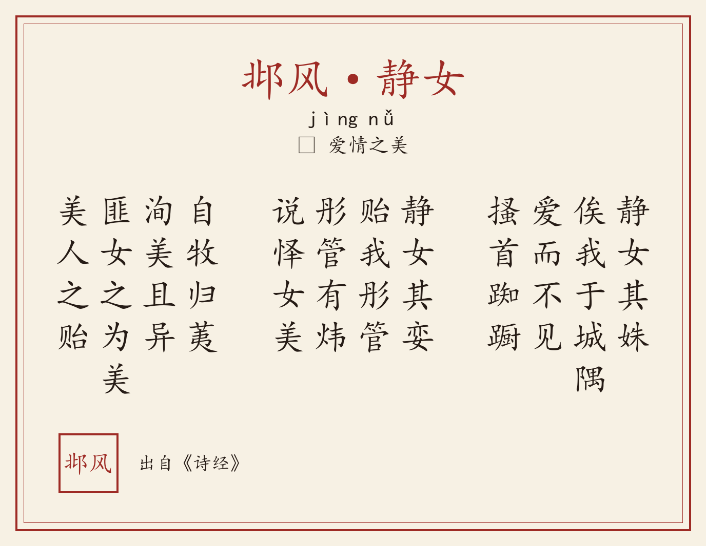

娴静姑娘真可爱，约我城角楼上来。故意躲藏让我找，急得抓耳又挠腮。娴静姑娘好容颜，送我一枝红彤管。鲜红彤管有光彩，爱它颜色真鲜艳。郊野采荑送给我，荑草美好又珍异。不是荑草长得美，美人相赠厚情意。
姝（shū）：美丽。
俟（sì）：等待。
踟蹰（chí chú）：徘徊、犹豫貌。
娈（luán）：美好。
贻（yí）：赠。
荑（tí）：初生的茅草。
华夏文字记载中最早的浪漫约会。城隅相约、彤管寄情、荑草为赠，“匪女之为美，美人之贻”写尽至纯情愫。邶城因此被誉为“千年爱情圣地”。